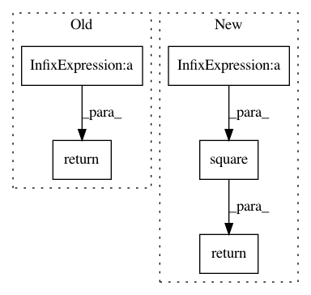

7d9d506e77585e5600b45dc41da1a731a4b30722,nn/loss.py,,sensitivity_specificity_loss,#Any#Any#Any#,83
Before Change
tf.add(tf.multiply(r, tf.reduce_sum(tf.multiply(tf.square(-1 * tf.sparse_add(-1 * pred, one_hot)) \
, tf.sparse_tensor_to_dense(one_hot)),
0) / tf.sparse_reduce_sum(one_hot, 0)), \
tf.multiply((1 - r), tf.reduce_sum(tf.multiply(tf.square(-1 * tf.sparse_add(-1 * pred, one_hot)), \
one_hotB), 0) / tf.reduce_sum(one_hotB, 0))))
return SensSpec
def l2_reg_loss(scope):
if not tf.get_collection("reg_var", scope):
After Change
// value of unity everywhere except for the previous "hot" locations
one_cold = 1 - one_hot
squared_error = tf.square(one_hot - pred)
specificity_part = tf.reduce_sum(squared_error * one_hot, 0) / tf.reduce_sum(one_hot, 0)
sensitivity_part = tf.reduce_sum(tf.multiply(squared_error, one_cold), 0) / tf.reduce_sum(one_cold, 0)
return tf.reduce_sum(r * specificity_part + (1 - r) * sensitivity_part)
def l2_reg_loss(scope):
if not tf.get_collection("reg_var", scope):
In pattern: SUPERPATTERN
Frequency: 3
Non-data size: 5
Instances
Project Name: NifTK/NiftyNet
Commit Name: 7d9d506e77585e5600b45dc41da1a731a4b30722
Time: 2017-04-27
Author: z.eaton-rosen@ucl.ac.uk
File Name: nn/loss.py
Class Name:
Method Name: sensitivity_specificity_loss
Project Name: shenweichen/DeepCTR
Commit Name: 9e6be3f28d5b213e8596b8f79e68efd6d5fd21ba
Time: 2020-05-17
Author: last.fantasy@qq.com
File Name: deepctr/layers/normalization.py
Class Name: LayerNormalization
Method Name: call
Project Name: keras-team/keras
Commit Name: 6ffa18e3905ac8dac016111063db4bbacbc788c7
Time: 2015-11-15
Author: francois.chollet@gmail.com
File Name: keras/objectives.py
Class Name:
Method Name: mean_squared_logarithmic_error